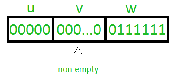
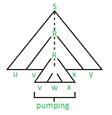

There are two Pumping Lemmas, which are defined for
1. Regular Languages, and
2. Context – Free Languages
Pumping Lemma for Regular Languages
For any regular language L, there exists an integer n, such that for all x ∈ L with |x| ≥ n, there exists u, v, w ∈ Σ∗, such that x = uvw, and
(1) |uv| ≤ n
(2) |v| ≥ 1
(3) for all i ≥ 0: uviw ∈ L
In simple terms, this means that if a string v is ‘pumped’, i.e., if v is inserted any number of times, the resultant string still remains in L.
Pumping Lemma is used as a proof for irregularity of a language. Thus, if a language is regular, it always satisfies pumping lemma. If there exists at least one string made from pumping which is not in L, then L is surely not regular.
The opposite of this may not always be true. That is, if Pumping Lemma holds, it does not mean that the language is regular.

For example, let us prove L01 = {0n1n | n ≥ 0} is irregular.
Let us assume that L is regular, then by Pumping Lemma the above given rules follow.
Now, let x ∈ L and |x| ≥ n. So, by Pumping Lemma, there exists u, v, w such that (1) – (3) hold.
We show that for all u, v, w, (1) – (3) does not hold.
If (1) and (2) hold then x = 0n1n = uvw with |uv| ≤ n and |v| ≥ 1.
So, u = 0a, v = 0b, w = 0c1n where : a + b ≤ n, b ≥ 1, c ≥ 0, a + b + c = n
But, then (3) fails for i = 0
uv0w = uw = 0a0c1n = 0a + c1n ∉ L, since a + c ≠ n.

Pumping Lemma for Context-free Languages (CFL)
Pumping Lemma for CFL states that for any Context Free Language L, it is possible to find two substrings that can be ‘pumped’ any number of times and still be in the same language. For any language L, we break its strings into five parts and pump second and fourth substring.
Pumping Lemma, here also, is used as a tool to prove that a language is not CFL. Because, if any one string does not satisfy its conditions, then the language is not CFL.
Thus, if L is a CFL, there exists an integer n, such that for all x ∈ L with |x| ≥ n, there exists u, v, w, x, y ∈ Σ∗, such that x = uvwxy, and
(1) |vwx| ≤ n
(2) |vx| ≥ 1
(3) for all i ≥ 0: uviwxiy ∈ L

{kind=link}
{kind=link}
For above example, 0n1n is CFL, as any string can be the result of pumping at two places, one for 0 and other for 1.
Let us prove, L012 = {0n1n2n | n ≥ 0} is not Context-free.
Let us assume that L is Context-free, then by Pumping Lemma, the above given rules follow.
Now, let x ∈ L and |x| ≥ n. So, by Pumping Lemma, there exists u, v, w, x, y such that (1) – (3) hold.
We show that for all u, v, w, x, y (1) – (3) do not hold.
If (1) and (2) hold then x = 0n1n2n = uvwxy with |vwx| ≤ n and |vx| ≥ 1.
(1) tells us that vwx does not contain both 0 and 2. Thus, either vwx has no 0’s, or vwx has no 2’s. Thus, we have two cases to consider.
Suppose vwx has no 0’s. By (2), vx contains a 1 or a 2. Thus uwy has ‘n’ 0’s and uwy either has less than ‘n’ 1’s or has less than ‘n’ 2’s.
But (3) tells us that uwy = uv0wx0y ∈ L.
So, uwy has an equal number of 0’s, 1’s and 2’s gives us a contradiction. The case where vwx has no 2’s is similar and also gives us a contradiction. Thus L is not context-free.
Source : John E. Hopcroft, Rajeev Motwani, Jeffrey D. Ullman (2003). Introduction to Automata Theory, Languages, and Computation.